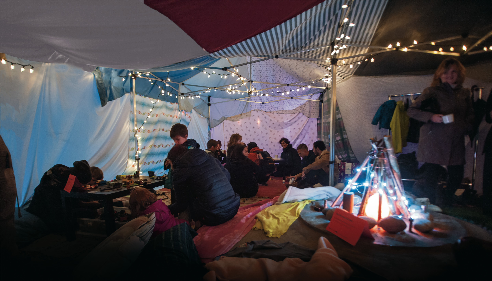
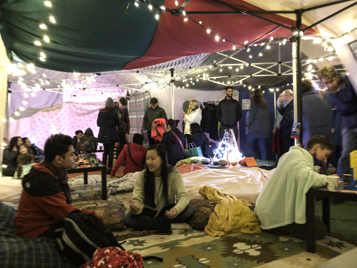
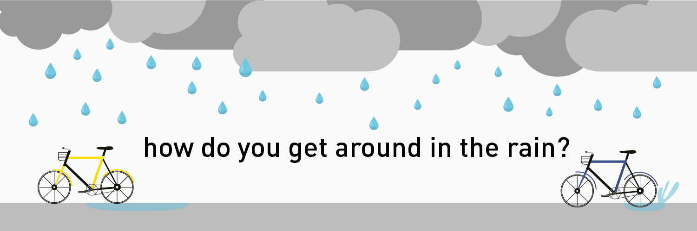
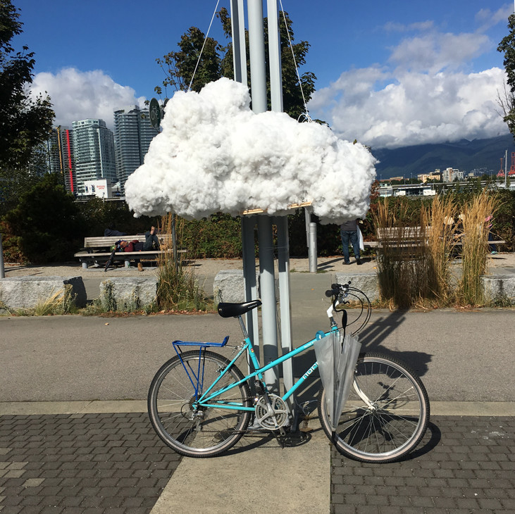
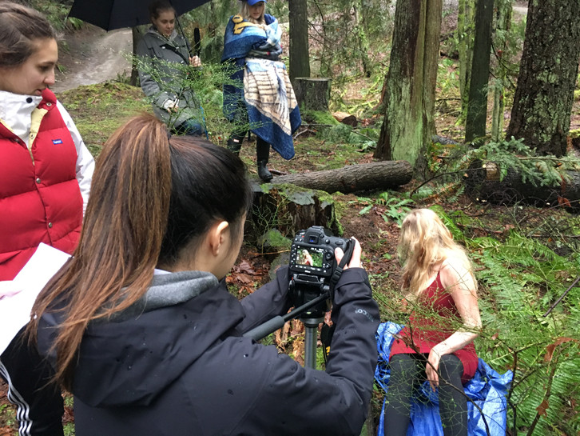

View To Launch
UI design, User study, Graphic Design, Prototyping back to top ^

Project summary
View to launch was an interactive prototype designed for the SFU satellite design club
The problem
We were tasked with studying a specific user group to discover their pain points and design a custom solution.
Background research
We interviewed, created cultural design problems and ran a creative workshop with the team. We discovered the team struggles to empower new members into their highly technical work flow.
Initial ideas
Our first idea was a type of social network or messaging app to allow members to chat and stay connected, but decided it wouldn’t offer benefits and the team was already using slack messaging.
Iterations
Moving forward we came up with the idea for a collaborative task application, to manager work flow and make it easy for new members to find things to do. On top of this we wanted to design a dashboard UI that could be displayed to promote the club and bring new members to the club.
Final form
We produced an interactive display using HTML, CSS and Java Script. Allowing any web connected touch display to act as a window into the clubs working. This was complimented with the tasks application, which was made as an interactive prototype.
Main take aways
Working with real clients really helped me see where the design opportunities were. I started seeing problems that the club had that members weren’t able to express when interviewed.
back to top ^

Connect Fort
Techical Design, Interaction Design, Public Engagement , Project Coordination, Graphic Design, Layout, Logo design back to top ^
Project summary
Connect fort was a large scale public blanket fort designed to be a inclusive space for people to meet and connect. It was a one day pop-up as part of the CityStudio and Viva Vancouver event Bridge Warming and saw over 400 guests come through. After our event I designed the poster and report for the project.
The problem
To put on the event our cohort was split into teams each taking a different big bucket theme, my group's being "gathering". We had 8 weeks to ideate, design and build our project.
Background research
We started looking around at what others had done in the space of public space events, and tried to find out why we all were drawn to gathering as a theme. We then started contacting stockholders in the community such as the Vancouver Police Department and neighbourhood association to get their feedback.
Initial ideas
Our initial ideas were a Blanket Fort, a campfire spot, and a hot chocolate social. These ideas all incorporated a draw and reason to stay.
Iterations
The actual fire concept was quickly deemed a logistical nightmare, and the heart of the hot chocolate idea didn’t align with our zero waste goals. We began to focus in on what could be inside a blanket fort and how it could serve the community.
Final form
Our final form was a roughly 450 square foot blanket fort, comprised of 3 borrowed pop-up tent frames and several dozen donated blankets sewn into a custom cover. Inside we served hot chocolate, while people could sit around our faux fire, or play with the lego or different games we provide. We collected bags of donations for union gospel mission as a way to ensure our project was supporting not just the people in it but other who are struggling in the winter.
Main take aways
Connect Fort was an absolutely inspirational project. Every piece of feedback from community members was positive. I learned a lot about working with other stakeholders and aligning your goals to thrive together.
back to top ^


All Weather YVR
Branding, Graphic Design, Social Media, Public Engagement back to top ^

Project summary
All Weather YVR was a campaign to engage with and educate residents of Vancouver about cycling in wet conditions. I branded the campaign while running the instagram and twitter to promote the project. A educational guide was also produced
The problem
Traffic congestion is often a daily scourge for Vancouverites, and one of the easiest ways to cut down on traffic is for more people to switch to bikes. My group of four wanted to see what people’s hesitations were around cycling especially in inclement weather.
Background research
We looked deeply into what the city of Vancouver and other organizations such as bike HUB were doing already. We looked at reports and plans to see where the city was today with its biking and where the city wants to go in the future.
Initial ideas
Our initial starting point was around transportation as a theme. We came to wet weather active transportation because we wanted to narrow the scope of our project and make it something people cared and had feelings about.
Iterations
As the lead graphic designer went through lots of iterations of sticker designs and a brand identity for the project’s social media arms and our cycling guide.
Final form
Our main draw was a very large cloud covered in papermache and pillow fluff. This acted as our draw on our day of action, where we talked to people on the Seawall. We then took the data we collected and our research and designed a guide to make biking in the rain more approachable.
Main take aways
Running the social media and graphic design taught me about creating a cohesive brand and sticking to it. It also was great practice talking and engaging with strangers, and how to get them to interact with our prompts.
back to top ^


Fugue
Videography, Editing, Team Managment back to top ^
Project summary
Fugue was a short thriller film, written, produced, shot and directed by myself and my three teammates.
The problem
We were given the opportunity to either adapt or write our own short film. We wanted as much creative freedom as possible so chose to write our own.
Background research
We went out and each watched dozens of short films, coming up with lists of concepts and plot lines. We also began looking for actors who might want to be involved in the project.
Initial ideas
We came around a lot of different story ideas, and after starting down a path we weren’t all happy with the idea for Fugue was developed.
Iterations
We had several versions of the script while we started planning out locations and the mood and aesthetic of the film. We had three main days of filming.
Final form
Our final form was Fugue, a short film where a girl wakes up bewildered in the woods. It then starts to reveal over time how she came to be there. The startling ending reveals she might not be as out of the woods as she though.
Main take aways
The short film taught me a lot about working in a team, especially when different visions for a project are conflicting. We all cared so deeply about the project that we had to really develop an understanding of each other and our roles.
back to top ^
